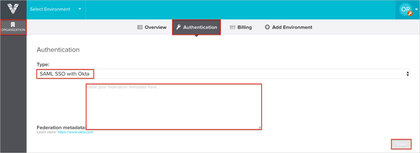

Log in to VividCortex as an Administrator.
Navigate to ORGANIZATION > Authentication.
For Type, select SAML SSO with Okta.
Copy and paste the following into the Federation metadata field:
Sign in to Okta Admin app to have this variable generated for you.
Click Save.

Done!
Notes:
IDP-initiated flows are supported.
SP-initiated flows and Just In Time (JIT) provisioning are not supported.